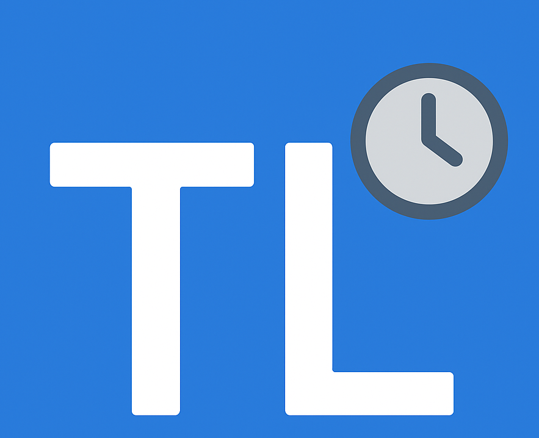
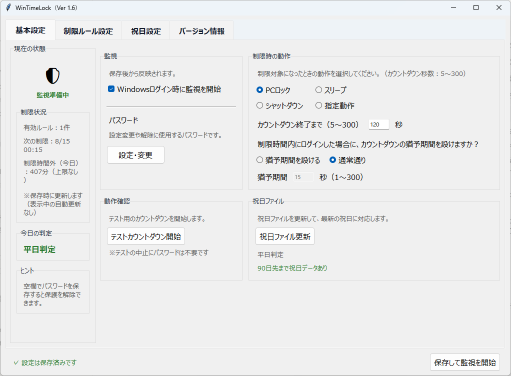

Windowsアプリ・無料
WinTimeLock
曜日・祝日・時間帯ごとにWindows PCの利用を制限できる時間管理ツールです。お子様の深夜利用防止だけでなく、自分の集中時間を守る用途にも使えます。

v1.5.1 の主な変更点
ロック解除後の猶予
PCロック後に再度ログインした場合、ロック中に猶予時間を消費せず、ロック解除後に猶予を開始します。
300秒カウントダウン
制限時間になったときの動作前カウントダウンを、1〜300秒で設定できます。
ログイン時の猶予期間
制限時間内にログインした場合だけ、通常のカウントダウン開始前に指定秒数の猶予を設けられます。
解除・延長
カウントダウン中に「6時間延長」や「この制限を今日だけ解除」を選べます。
ご利用前に
- 本ソフトは強固なセキュリティ製品ではなく、家庭内での利用時間をゆるやかに管理する補助ツールです。
- Windows 10 / 11 を想定しています。インストーラー形式で、Pythonなどを別途インストールする必要はありません。